5.2 Water Balance Impacts#
Water balance components, such as soil moisture, precipitation, and runoff, can vary significantly across spatial and temporal scales. This variability makes comprehensive measurement both challenging and expensive. To accurately and efficiently understand and model these components, field campaigns and experiments must be designed to collect appropriate types and amounts of data, allowing for scaling across time and space. Precise measurements are also crucial for the effective management of water resources.
In this section, you will:
Use accepted methodologies to scale point measurements to the desired spatial extent effectively.
Learn how critical zone processes and land management decisions impact the water balance. Decision-making in water resource management requires a deep understanding of the water cycle and quantitative data to balance societal and environmental water needs effectively.
Scaling of Point Measurements#
Scientists utilize data from multiple rain gauges to estimate rainfall distribution over a specific area. This distribution can be analyzed for storms, days, months, or even years. Calculating an average rainfall depth or assessing the spatial distribution of depths may be important.
Precipitation can be highly variable. When multiple gauges are available, the spatial rainfall average must be derived from point measurements. A weighted average approach is commonly employed for this calculation.
In this context, let ( P ) represent the precipitation measured at a gauge ( i ), ( n ) denote the total number of gauges, and ( w ) signify the weight assigned to each gauge. The most common methods for estimating the spatial average from multiple gauges involve assigning weights to the gauges. For instance, we could calculate a direct average of all the gauges. In this case, each gauge is assigned an equal weight. If ( n = 3 ), each gauge would receive a weight of (\frac{1}{3}). This approach is equivalent to summing all the measurements ( P ) and dividing by the total number of gauges.
However, a significant drawback of the direct averaging method is that it assumes the gauges are positioned in a manner that adequately captures the actual spatial variability of precipitation. For example, in mountainous regions, precipitation is often greater at higher elevations within a watershed. If all the gauges are located at high elevations, this method could overestimate the average precipitation. Conversely, suppose the gauges are distributed throughout the watershed in a way that accurately reflects the relationship between precipitation and elevation. In that case, the direct average will yield a more reliable estimate.
A simple arithmetic average is sufficient when the rain gauges are evenly distributed. However, other methods must be considered to ensure accurate measurements if the gauges are unevenly distributed.
Thiessen Polygon Method#
The Thiessen polygon method is one of the most commonly used methods for calculating aerial precipitation. The process of using this method is illustrated in Fig. 37. To apply this technique, the locations of each rain gauge, both within and adjacent to the area of interest, are marked on a map. The rainfall amount recorded at each gauge is noted.
Next, dashed lines are drawn to connect each adjacent gauge site, and solid perpendicular bisectors are constructed along these lines. This creates an area around each gauge, enclosed by the bisectors, referred to as a Thiessen polygon. The entire area within each polygon is closer to the rain gauge in that polygon than any other gauge. Therefore, the rainfall amount measured by the gauge in each polygon is assumed to represent the rainfall for that polygon.
The areas of each polygon are calculated using geometric methods, a planimeter, graph paper, or computer-aided design software. To find the average rainfall for the entire area, a weighted average of the observed rainfalls is then calculated, as outlined below:
where \(P\) represents the average depth of rainfall in the watershed with a total area of \(\sum_{i=1}^n A_i\), and \(A_i\) is the area of the \(i\)th polygon with precipitation of \(P_i\) in that polygon.

Fig. 37 This graphical technique calculates station weights based on the relative areas of each measurement station in the Thiessen polygon network. The individual weights are multiplied by the station observation, and the values are summed to obtain the average precipitation.#
Image source: Precipitation Measurements (weather.gov)
Thiessen Polygon Interpolation
Here are the steps involved in Thiessen Polygon Interpolation:
Identify Known Points: Start by gathering known values from your dataset.
Constructing Thiessen Polygons:
Starting Point: Begin with a set of discrete sample points on a plane. These points could represent weather stations, archaeological sites, or any other point data type.
Drawing Perpendicular Bisectors: For each pair of neighboring points, draw the perpendicular bisector, which is a line that divides the shortest distance between them in half. This bisector marks a boundary where locations are equidistant from the two points.
Meeting of Bisectors: As more bisectors are drawn, they will intersect, forming the vertices of polygons.
Completing the Polygon: Once all necessary bisectors are drawn, the polygons are complete, with each polygon surrounding its respective sample point.
Key Features and Assumptions: Each polygon represents the area of influence of its central sample point. Any location inside a particular Thiessen polygon is closer to its central sample point (or “source point”) than any other sample point outside the polygon.
Interpolate: Finally, use the value of the central point of each Thiessen polygon to estimate values at unknown locations.
Example of Thiessen Polygon Interpolation
In the following watershed area, there are six meteorological stations where annual precipitation values are reported.
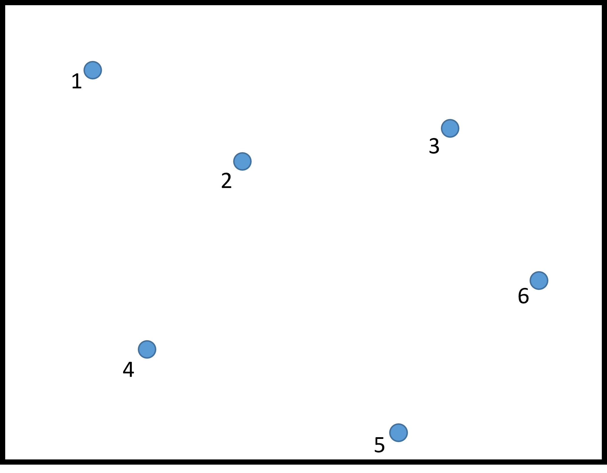
Met Station |
Precipitation, mm |
|---|---|
1 |
985 |
2 |
1015 |
3 |
963 |
4 |
1101 |
5 |
1057 |
6 |
1078 |
Calculate the annual precipitation for the entire area.
Step 1: Draw lines connecting all the points to their two nearest neighbors.
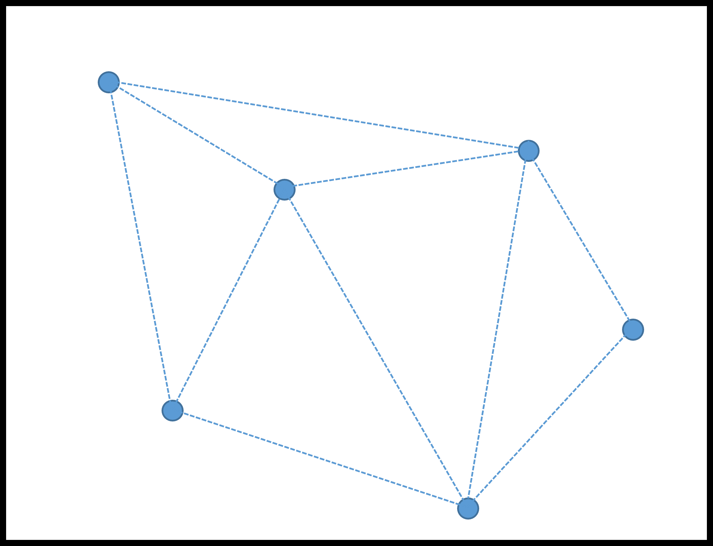
Step 2: Draw lines that bisect (divide the lines in half) perpendicular to the lines connecting the points.
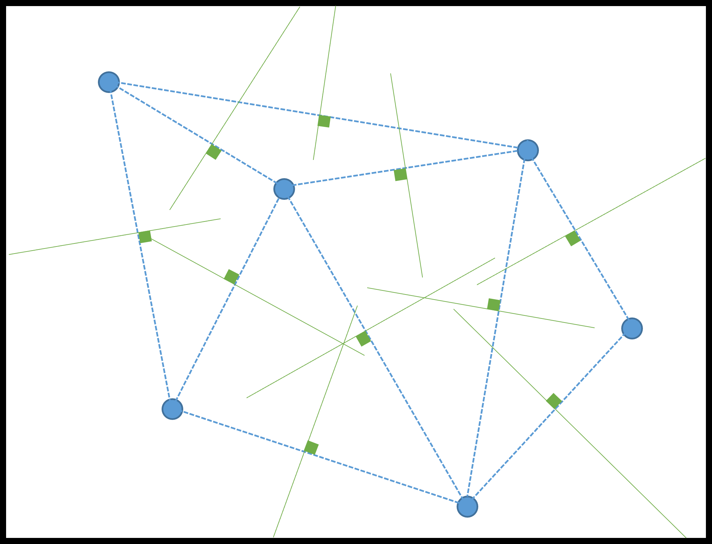
Step 3: Lengthen or shorten all lines to make them connect. Note that they should all come to a single point.
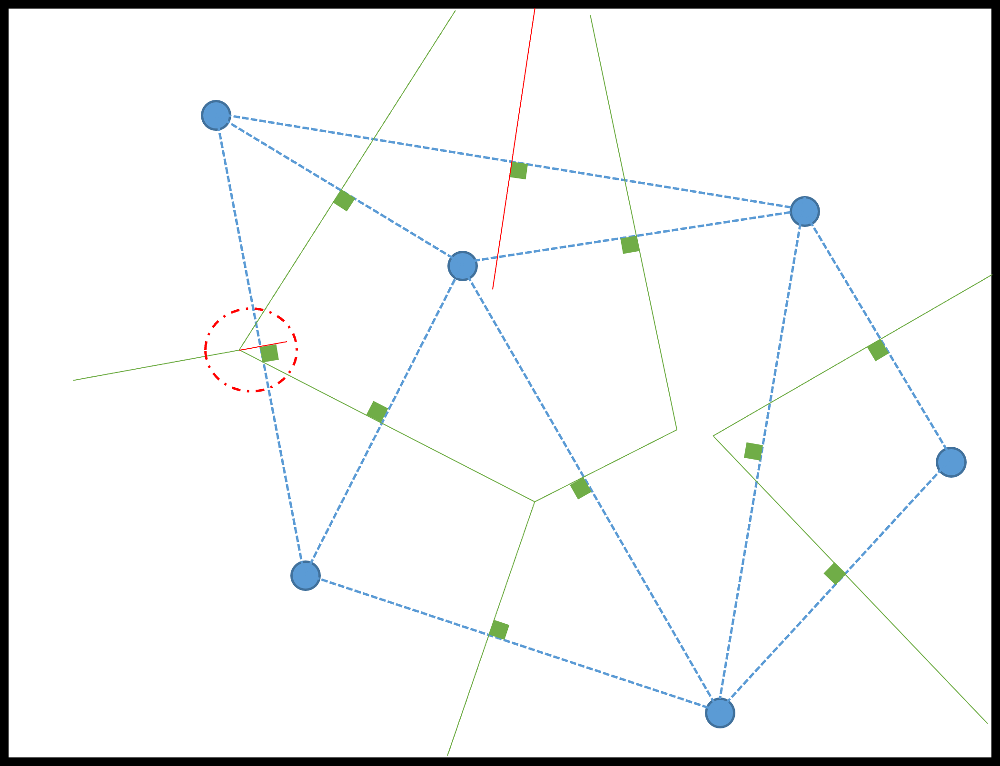
Step 4: Remove all the unnecessary lines.
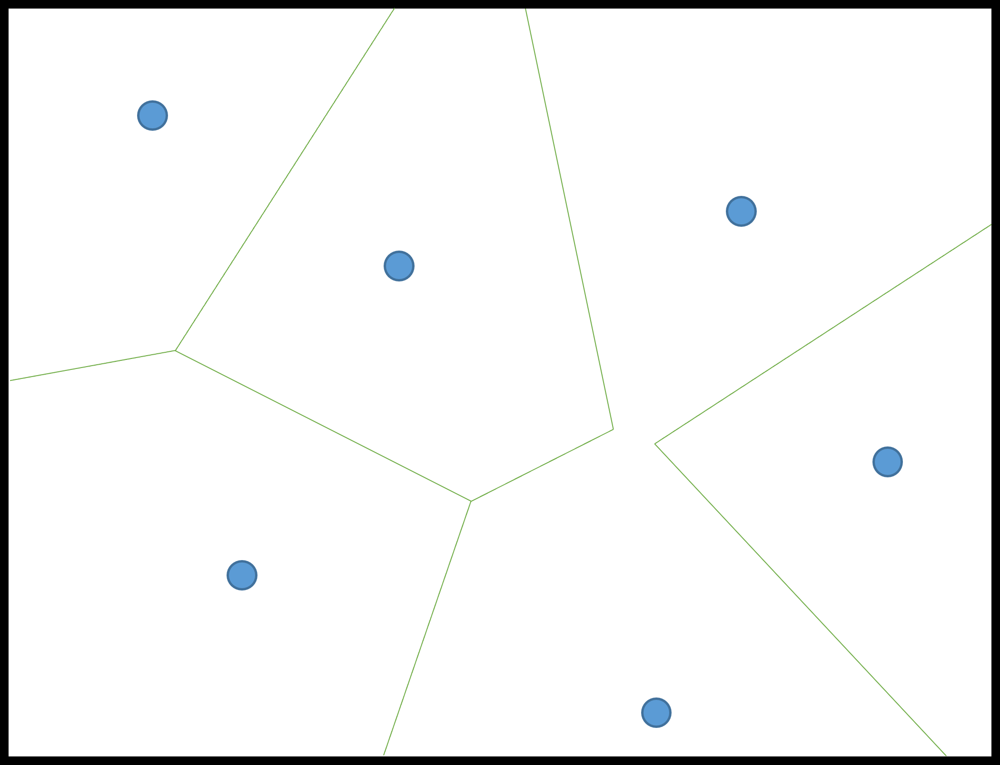
Step 5: Once the final image is obtained, the proportions of each polygon to the whole should be calculated. This can be performed using geometry or by printing the Thiessen polygons on graph paper and counting the boxes in each polygon.
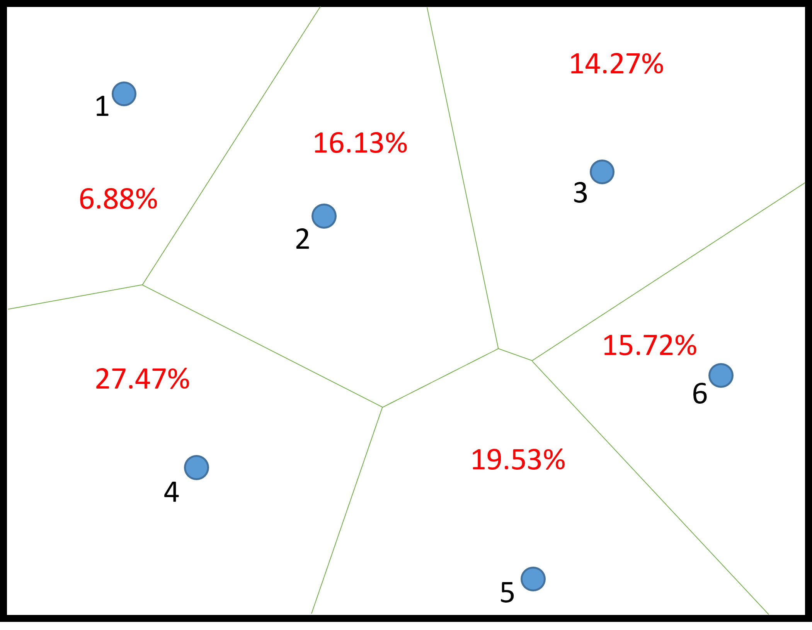
Step 6: Calculate the weighted precipitation value for the area around each met station
Step 7: Calculate the weighted precipitation for the entire extent
Setting all the calculations in a table, we can see that the precipitation for the entire basin is \(\pu{1047.2 mm} \)
Met Station |
Precip. (mm) |
% Area |
Weighted Precip. (mm) |
|---|---|---|---|
1 |
985 |
6.9 |
68 |
2 |
1015 |
16.1 |
163.4 |
3 |
963 |
14.3 |
137.7 |
4 |
1101 |
27.5 |
302.8 |
5 |
1057 |
19.5 |
206.1 |
6 |
1078 |
15.7 |
169.3 |
Sum |
1047.2 |
Inverse Distance Weighted Method#
Inverse Distance Weighted (IDW) interpolation is based on the assumption that locations close to each other are more similar than those that are farther apart. IDW uses the measured values from the surrounding area to predict a value for an unmeasured location. The measured values closest to the prediction location have a greater impact on the predicted value than those farther away. IDW operates on the principle that each measured point has a local influence that decreases with distance. It assigns greater weights to points nearest to the prediction location, while the weights decrease as the distance increases, which is why it is called “inverse distance weighted.” The calculation for IDW is typically performed using a specific formula as shown below:
where \(P\) represents the average depth of rainfall in the watershed and \(d_i\) is the distance from a known point.

Fig. 38 Interpolation between three known values involves identifying the closest neighbor or centroid between the three values that best captures the#
Inverse Distance Weighting (IDW)
Here are the steps involved in Inverse Distance Weighting (IDW):
Identify Known Points: Identify the known values in your dataset.
Understand Spatial Autocorrelation: IDW operates on the principle that closer locations are more similar than those farther apart. This concept is referred to as spatial autocorrelation.
Calculate Path Distances: Measure the path distances from each known point to every prediction point.
Assign Weights: Assign weights to the known points based on their distances from the prediction location. The closer a known point is to the prediction location, the greater its influence on the predicted value.
Example of IDW Interpolation
In the following watershed area (same as the Thiessen Polygon Method example), there are six meteorological stations where annual precipitation values are reported.
Met Station |
Precipitation, mm |
|---|---|
1 |
985 |
2 |
1015 |
3 |
963 |
4 |
1101 |
5 |
1057 |
6 |
1078 |
Calculate the annual precipitation for the entire area.
Step 1: Decide how many pixels to create. Let us choose six for this example. There will come a point where adding pixels will not improve the result.
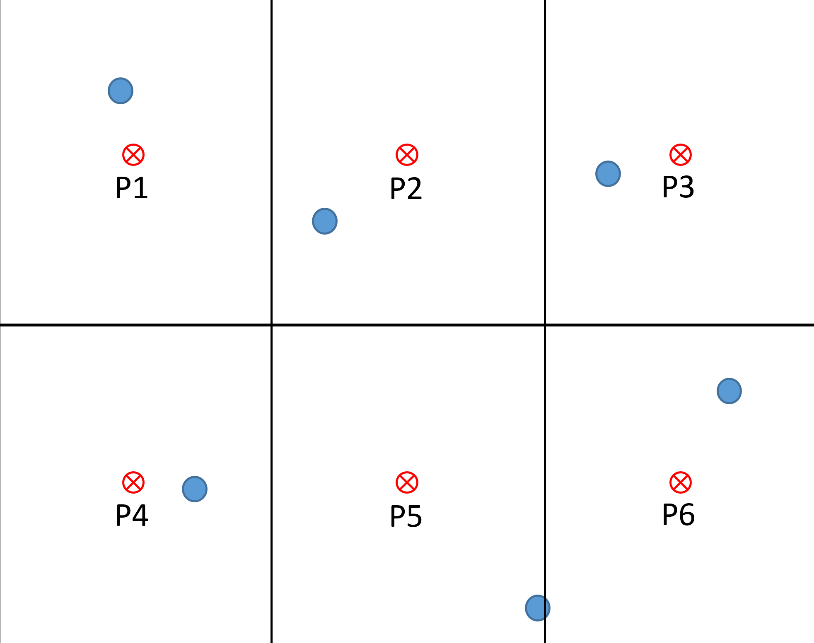
Step 2: Choose the nearest three neighbors to each centroid in a pixel.
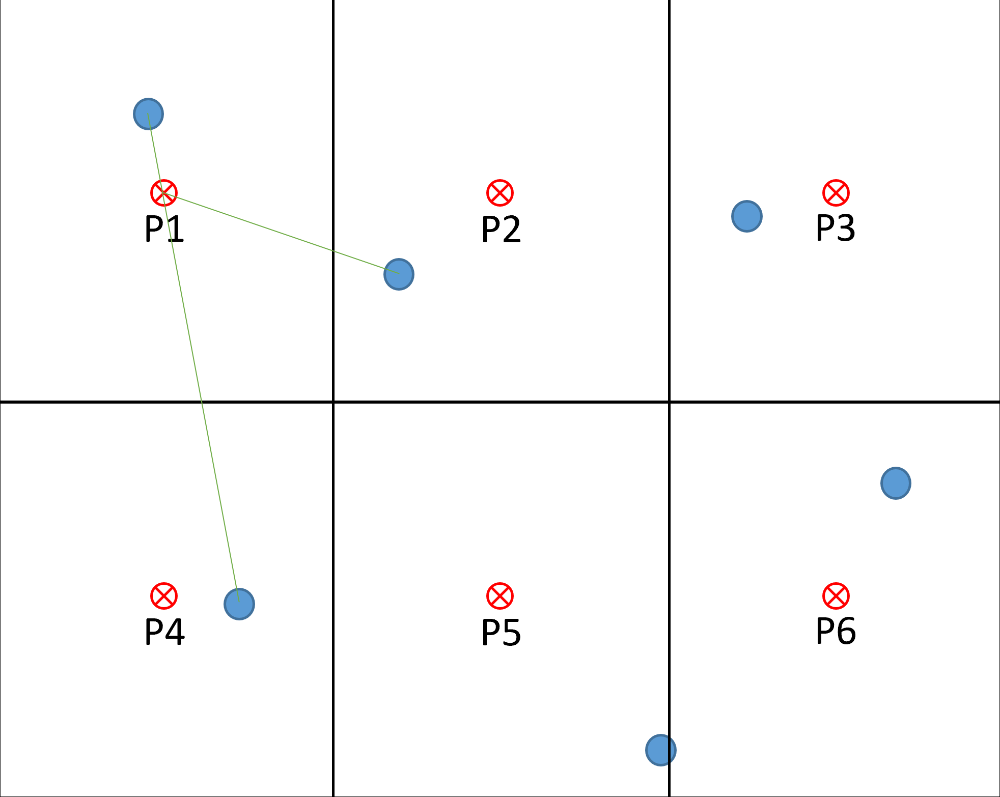 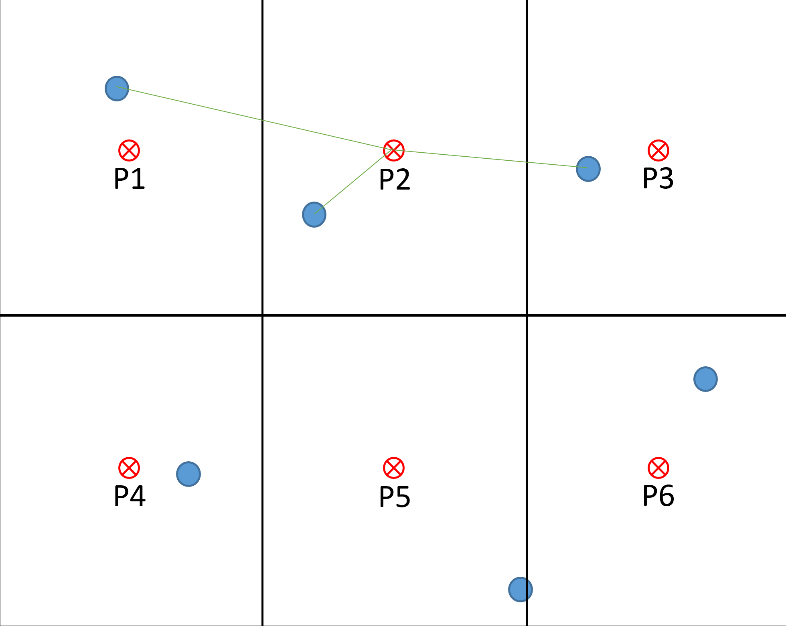 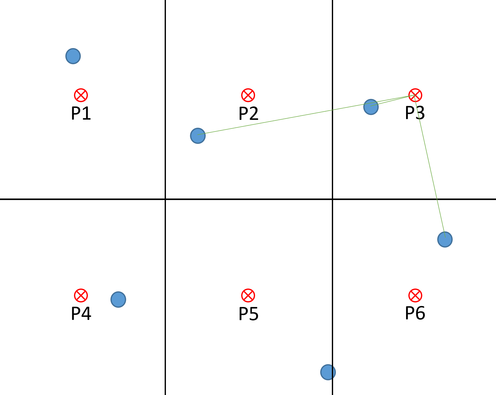 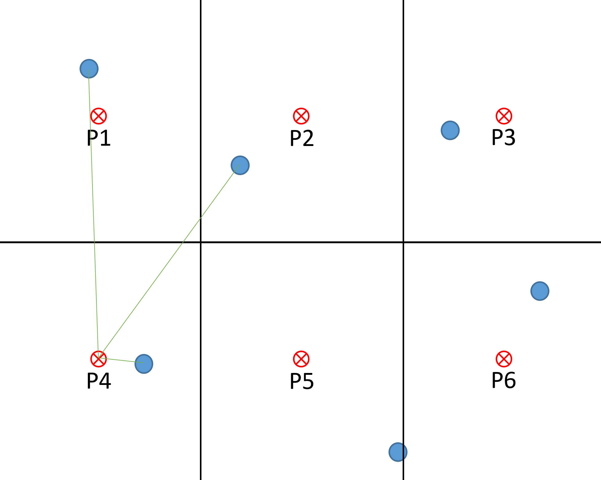 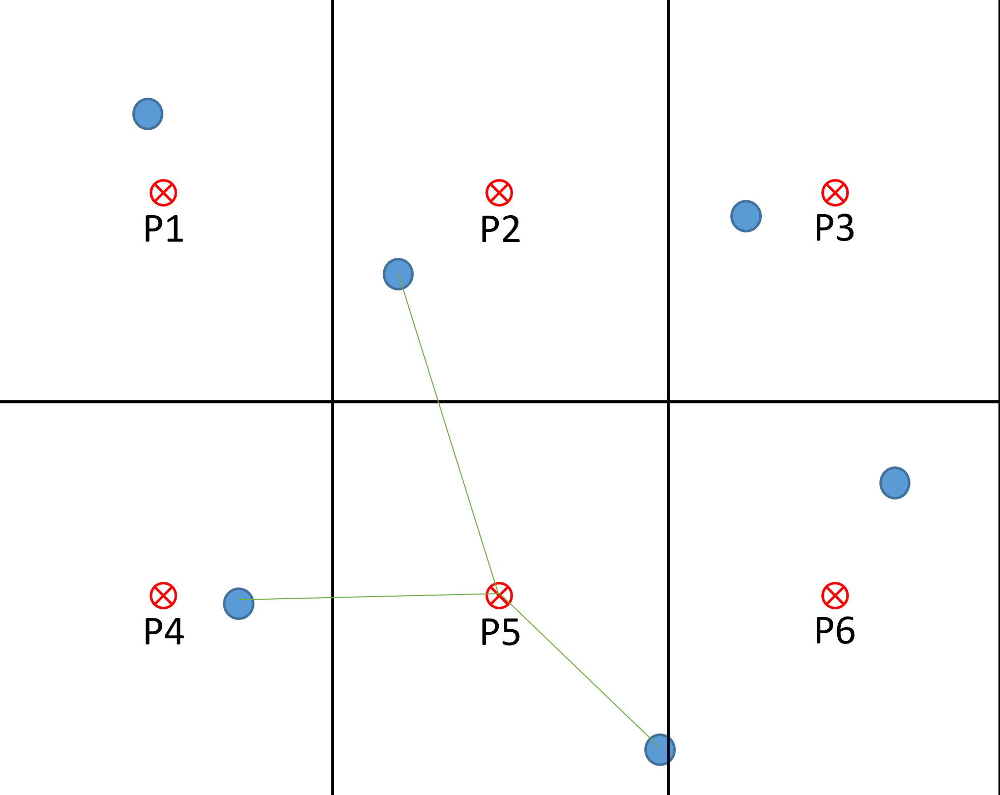 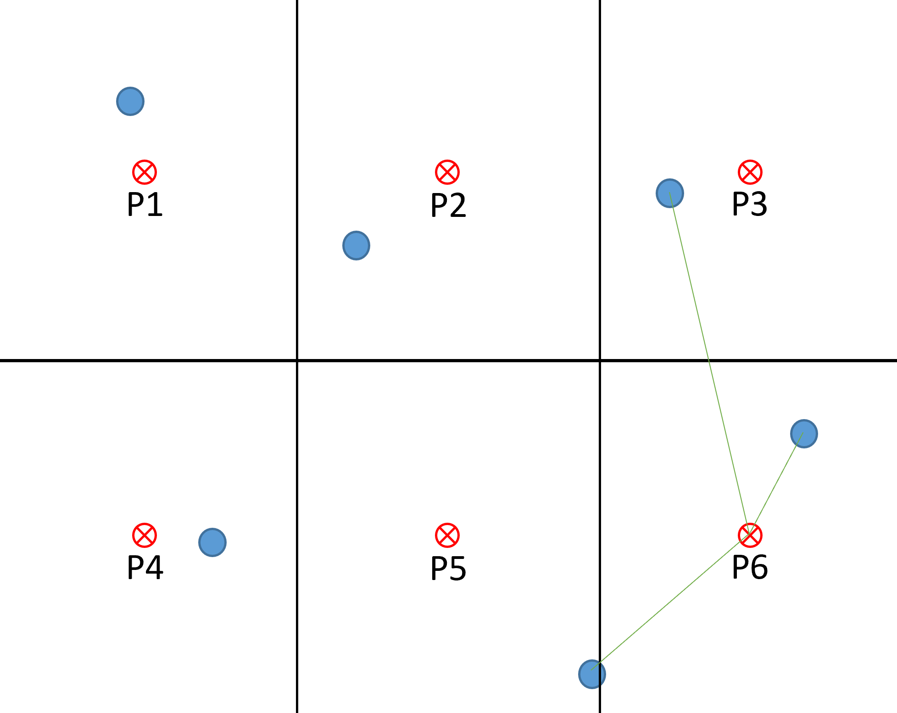
Step 3: Calculate the IDWs for each pixel as follows.
For Pixel 1: Example calculation for an upper left corner pixel using neighbors 1, 2, and 4:
Step 4: Calculate IDWs for all pixels
Setting all the calculations in a table, we can see that the precipitation for the entire basin is \(\pu{1047.2 mm} \)
Pixel # |
Nearest Met Stations |
Distance (cm) |
Annual Precip (mm) |
Pixel Annual Precip (mm) |
|---|---|---|---|---|
1 |
1, 2, 4 |
1.2, 3.8, 6.4 |
985, 1015, 1101 |
1005.8 |
2 |
1, 2, 3 |
5.5, 2.0, 3.8 |
985, 1015, 963 |
994.8 |
3 |
2, 3, 6 |
6.8, 1.4, 4.5 |
1015, 963, 1078 |
993.6 |
4 |
1, 2, 4 |
6.3, 5.5, 1.3 |
985, 1015, 1101 |
1070.3 |
5 |
2, 4, 5 |
5.1, 4.0, 3.4 |
1015, 1101, 1057 |
1060.7 |
6 |
3, 5, 6 |
5.9, 3.5, 1.9 |
963, 1057, 1078 |
1052.0 |
Step 5: Calculate weighted precip for the entire basin. Since the six pixels are equal in size, take the arithmetic mean.
This final value is similar to that obtained using the Thiessen Polygon Method - a difference of less than 2%.
Hypsometric Method#
Hypsometry refers to the measurement of elevation. The hypsometric method combines the elevation distribution within a watershed with a known relationship between precipitation and elevation to assign weights to different elevation classes.
One advantage of the hypsometric method, particularly in mountainous terrain, is that it considers the factors that cause spatial variability in precipitation. Using this method, researchers can calculate the average precipitation over a watershed based on the elevation distribution and the precipitation-elevation relationship.
The hypsometric method is particularly useful for estimating precipitation in mountainous areas, where the relationship between elevation and precipitation is often non-linear. Additionally, the method is relatively straightforward, making it a practical choice for watershed-scale studies.
Hypsometric Weighting Method
To calculate aerial precipitation using the hypsometric method, follow these steps:
Obtain the distribution of elevation within the watershed. This can be done using various methods, such as topographic maps, digital elevation models (DEMs), or GPS data.
Determine the precipitation-elevation relationship. This can be achieved using historical data, climate models, or theoretical relationships.
Calculate the weights for each elevation class. This involves multiplying the area of each elevation class by the precipitation value associated with that class.
Calculate the average precipitation over the watershed. This is done by weighting the precipitation for each elevation class according to the previously calculated weights.
Following these steps, you can calculate aerial precipitation using the hypsometric method.
The method is relatively simple to implement and can be used to calculate average precipitation over large areas.
Water Management and Balance#
Climate change is intensifying the water cycle, leading to an increase in the evaporation rate worldwide due to rising global temperatures. This heightened evaporation in one area of the Earth results in increased precipitation in another. Extreme weather events are causing significant water scarcity, excessive rainfall, and degraded water environments. These effects on the water cycle pose serious threats to sustainable development, biodiversity, and people’s access to water and sanitation.
According to the latest IPCC Assessment Report,, managing water resources is a top priority in adaptation strategies.

Fig. 39 Projected changes of annual maximum daily maximum temperature, annual mean total column soil moisture, and annual maximum 1-day precipitation at global warming levels of 1.5°C, 2°C, 3°C, and 4°C relative to 1850–1900. Projected (a) annual maximum daily temperature change (°C), (b) annual mean total column soil moisture (standard deviation), (c) annual maximum 1-day precipitation change (%). The panels show CMIP6 multi-model median changes. In panels (b) and (c), large positive relative changes in dry regions may correspond to small absolute changes. In panel (b), the unit is the standard deviation of interannual variability in soil moisture during 1850–1900. Standard deviation is a widely used metric in characterizing drought severity. A projected reduction in mean soil moisture by one standard deviation corresponds to soil moisture conditions typical of droughts that occurred about once every six years during 1850–1900.#
Image source: Figures: AR6 Synthesis Report (ipcc.ch)
In many regions of the western United States, mountains function as “water towers.” However, societal demand for water in these mountainous areas is relatively low. In California, precipitation falls in the mountain ranges and flows through rivers, man-made aqueducts, and canals to regions with higher water demand. Additionally, the snowpack acts as a natural reservoir, gradually releasing water downstream as it melts.
California experiences a rainy season in winter and spring, followed by a dry season in the summer and early fall. This dry period coincides with the peak of the agricultural growing season when water demand is at its highest. Residential and commercial areas generally do not alter water usage to align with natural supply fluctuations. To mitigate this issue, large reservoirs have been built to store winter precipitation and snowmelt. These reservoirs help regulate the downstream flow of streams and rivers.
Land development can significantly impact the water balance of a watershed. Changes in land use or cover can alter the magnitude and pattern of various components of the water balance, leading to increased water management challenges (e.g., Schilling et al., 2008,Kundu et al., 2017).
As water stress increases, wildfires are also expected to rise. Wildfires release ash and contaminants into streams, lakes, and water reservoirs. The vegetation that typically retains soil and water is burned away, which can lead to additional geological hazards. According to EPA, after a large wildfire, rainstorms can wash significant amounts of ash, sediment, nutrients, and contaminants into streams, rivers, and downstream reservoirs. Fire suppression efforts in the western U.S. mountains have resulted in dense forests with high evapotranspiration, increasing the risk of wildfires. Restoring natural wildfire regimes in these forests could modify hydrology by changing the composition and structure of vegetation. Still, the specific effects on the water balance remain uncertain (Boisramé et al., 2019).
Fire suppression can also have a considerable impact on water quality. Runoff from fire suppression can contaminate soil and water with toxic or hazardous materials. Direct exposure to soil and water from hazardous materials, which may spill due to fire, can lead to air contamination through smoke plumes and their subsequent dispersal. This can result in the deposition of particulates and other contaminants, further compromising soil and water quality (Martin et al., 2016).
Mini-Project #6
Part A
Read Mountain runoff vulnerability to increased evapotranspiration with vegetation expansion
Cooperatively and collaboratively present the main findings from this paper for the Southern Sierra Nevada CZO. See the breakdown of tasks for the format. Use good screenshots of the figures and graphs and add text.
Add your name to one part and take ownership of the appropriate slides. The Results and Discussion sections can be worked on with a partner.
Main goals, hypotheses, and objectives
Site information - include maps
Methods - summary w/ representative pictures of methods
Main Results - select a few (not all)
Discussion of Data
Conclusions
Part B
Complete the SimWater exercise posted on OAKS.